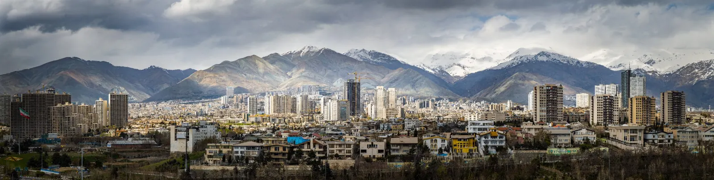
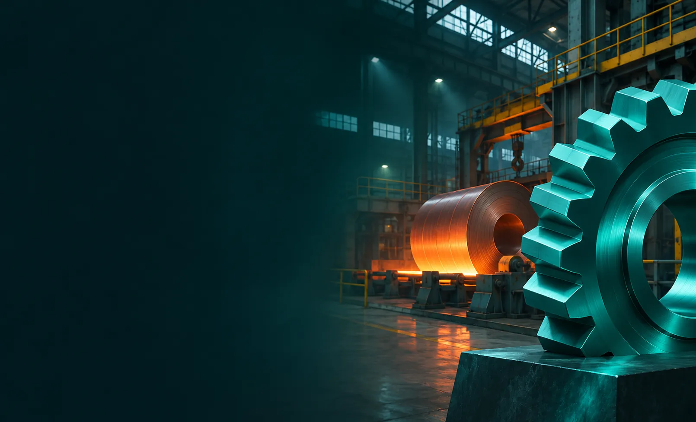
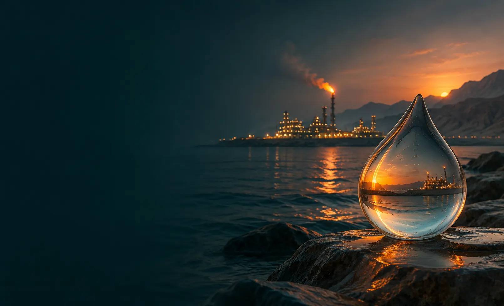
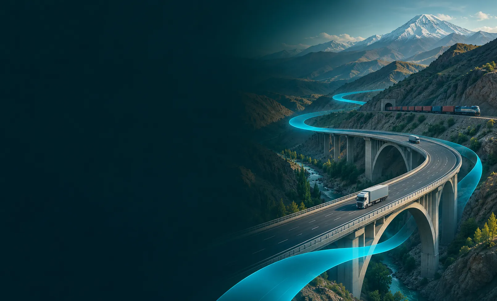
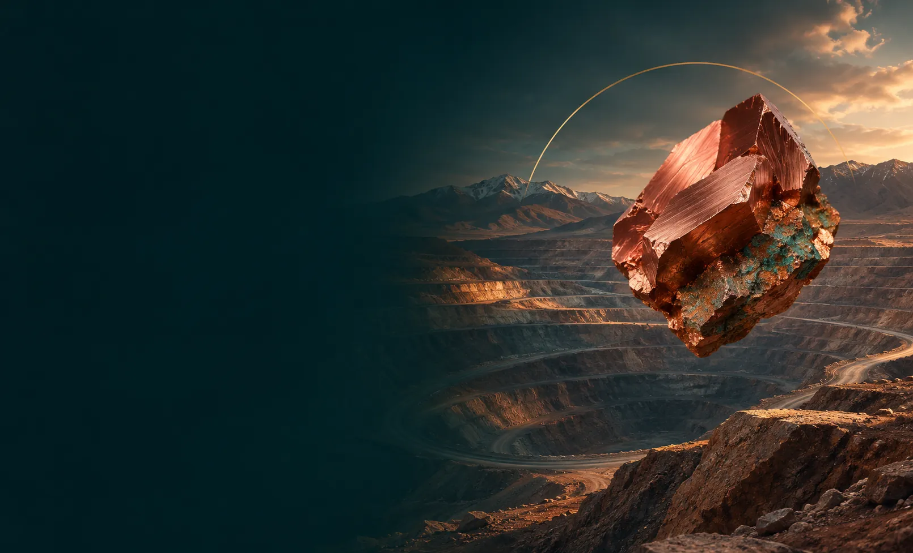

Crypto and money, made practical
سواد مالی و کریپتو، کاربردیHow blockchains work, how to check a token before you touch it, and how to protect yourself from scams.

با هم صنعت، شرکتها و فضای کسبوکار ایران را بهتر میشناسیم و رمزارز و فناوری مالی را به زبان ساده یاد میگیریم.
Learn · Connect · Evolve
Photo:عکس: Amir PashaeiCC BY-SA 4.0
One permanent editorial rule across all three: real knowledge and real achievement, no political commentary from any side.
How blockchains work, how to check a token before you touch it, and how to protect yourself from scams.
Honest analysis of the shifts coming, read from where our audience actually stands.
Documenting people and businesses who keep building under pressure, on their own terms.
A structured map of what is made, mined, moved and seen in Iran: six branches, their official sub-branches, the leading companies, and a source for every number.




History, products, leadership and figures, sector by sector, with a source for each number.
Kraft and semi-kraft paper, corrugated board and cartons, cardboard; Yazd Industrial Town
کاغذ کرافت و سمیکرافت، ورق و کارتن کنگرهای، مقوا؛ شهرک صنعتی یزد
View the recordOne of Iran's largest ethylene and polyethylene makers, in Asaluyeh, exporting over 70% of output
یکی از بزرگترین تولیدکنندگان اتیلن و پلیاتیلن ایران در عسلویه؛ بیش از ۷۰٪ محصول برای صادرات
View the recordCoated MDF sheets and profiles, PVC wall panels, artificial stone, ceiling tiles; Anzali Free Zone, Gilan
ورق و پروفیل امدیاف روکشدار، دیوارپوش پیویسی، سنگ مصنوعی و تایل سقفی؛ منطقه آزاد انزلی، گیلان
View the recordHerbal medicines, cosmetics, food products and essential oils; Kashan, Isfahan (plant near Qamsar)
داروی گیاهی، آرایشی و غذایی بر پایهی گیاهان دارویی؛ اسانس؛ کاشان، اصفهان (کارخانه نزدیک قمصر)
View the recordPulp and paper; Gilan
خمیر کاغذ و کاغذ؛ گیلان
View the recordRosewater, herbal distillates, natural syrups and dried herbs; Amirkabir 1 Industrial Town, Kashan
گلاب، عرقیات گیاهی، شربت طبیعی و گیاهان دارویی خشک؛ شهرک صنعتی امیرکبیر ۱، کاشان
View the recordNegin, pushal and powdered saffron; saffron candy and herbal tea; Mashhad, Razavi Khorasan
زعفران نگین، پوشال و پودر؛ نبات و دمنوش زعفرانی؛ مشهد، خراسان رضوی
View the recordA Shiraz maker of heavy oil, gas and petrochemical equipment, from heat exchangers to a 500-tonne reactor
سازندهی تجهیزات سنگین نفت، گاز و پتروشیمی در شیراز؛ از مبدل حرارتی تا راکتور ۵۰۰ تنی
View the recordFrom a detergent plant in Zanjan to a many-sided group, spanning food, medicine, chain stores and cinema
از یک کارخانهی شوینده در زنجان تا گروهی چندرشتهای؛ از غذا و دارو تا فروشگاه زنجیرهای و سینما
View the recordChairs and tables for public spaces, offices and homes; Iran
صندلی و میز برای فضاهای عمومی، اداری و خانگی؛ ایران
View the recordFrom Amol to regional markets: one of Iran's best-known dairy brands
از آمل تا بازارهای منطقه؛ یکی از شناختهشدهترین برندهای لبنی ایران
View the recordFluting, testliner, white-top liner, kraft and gypsum-board liner; Tehran (office)
فلوتینگ، تستلاینر، وایتتاپ، کرافت و کاغذ روکش گچبرد؛ تهران (دفتر)
View the recordRecycled cardboard and packaging paper; Ardestan, Isfahan
مقوا و کاغذ بستهبندی بازیافتی؛ اردستان، اصفهان
View the recordFluting and testliner; Kerman 2nd Industrial Zone
کاغذ فلوتینگ و تستلاینر؛ شهرک صنعتی دوم کرمان
View the recordFacial and toilet tissue, low-grammage and copier paper, wrapping paper; Tehran (office)
دستمال کاغذی، کاغذ توالت، کاغذ کمگراماژ و کپی، کاغذ بستهبندی؛ تهران (دفتر)
View the recordPrinting and writing paper, including textbook paper; Sari, Mazandaran
کاغذ چاپ و تحریر، از جمله کاغذ کتاب درسی؛ ساری، مازندران
View the recordPlain and melamine particleboard, plywood and veneer; Miandorud, Mazandaran
نئوپان ساده و ملامینه، تخته چندلایه و روکش چوب؛ میاندورود، مازندران
View the recordOffice chairs, sofas, tables and home furniture; Tehran; factory in Parand Industrial Park
صندلی اداری، مبل، میز و مبلمان خانگی؛ تهران؛ کارخانه در شهرک صنعتی پرند
View the recordMelamine MDF and chipboard, high-gloss sheet, melamine paper, flooring and parquet; 2nd Industrial Zone, Ahvaz, Khuzestan
امدیاف و نئوپان ملامینه، ورق هایگلاس، کاغذ ملامینه، کفپوش و پارکت؛ شهرک صنعتی دوم اهواز، خوزستان
View the recordOffice, residential, hotel and exhibition furniture; Tehran
مبلمان اداری، مسکونی، هتلی و نمایشگاهی؛ تهران
View the recordCoated MDF/HDF, particleboard, impregnated paper, worktops, formaldehyde; Iran
امدیاف و اچدیاف روکشدار، نئوپان، کاغذ ملامینه، رویهی کابینت، فرمالدئید؛ ایران
View the recordBagasse (sugarcane) pulp, writing paper, kraft liner, fluting and sanitary paper; Haft Tappeh, Shush, Khuzestan
خمیر کاغذ از باگاس نیشکر، کاغذ تحریر، کرافتلاینر، فلوتینگ و کاغذ بهداشتی؛ هفتتپه، شوش، خوزستان
View the recordSaffron, dried fruit and nuts, saffron rock candy; Toos Industrial City, Mashhad
زعفران، خشکبار و نبات زعفرانی؛ شهرک صنعتی توس، مشهد
View the recordFibreboard and reconstituted wood products; Tehran (HQ)
تخته فیبر و فرآوردههای چوب بازساخته؛ تهران (دفتر مرکزی)
View the recordHerbal medicines, from seed selection and farming to extraction; Iran
داروهای گیاهی، از انتخاب بذر و کشت تا استخراج؛ ایران
View the recordDitoman takes its name from the Toman, the everyday name for Iranian money: a "digital Toman". TMN was deployed on BNB Smart Chain in February 2022 with one question behind it: can knowledge itself carry real value?
For nearly four years we stayed deliberately quiet. No marketing, no token sale, no launch. That history is on-chain for anyone to check, and it is the clearest sign this was never built for a quick pump.
Short lessons by topic, about five minutes each, in both languages, each ending with a quiz.
Lessons, short news explainers and updates, in Farsi and English. No signals, no hype.
TMN is the BEP-20 token behind Ditoman, planned for recognising real learning and contribution. It is not an investment product and we do not ask anyone to buy it.
Several unrelated tokens use the ticker TMN. This is the only official contract:
0x86a56e59f22Eaf3867EEeB41fB9BfA81BacE790d
نقطهضعفها را هم مینویسیم، چون درس بررسی توکن یاد میدهد دنبالشان بگردی.
Phases, not dates. We report progress honestly, including what did not work.
Contract verified, ownership renounced, about 20% of supply out of circulation, bilingual lessons published, whitepaper final.
A Telegram community with real rules, seeded lessons and clear onboarding, before any invitation.
29 Oct 2026: all TMN/BNB liquidity in the project's main wallet locked until 29 Oct 2027. Verify the lock · What it means
۷ آبان ۱۴۰۵: همهی لیکوئیدیتی TMN/BNB کیفپول اصلی پروژه تا ۷ آبان ۱۴۰۶ قفل شد.
Joining Persian-language crypto and diaspora communities, and the first public supply removal with proof.
Small, transparent rewards tied to verifiable learning, with a public review of results.
A bilingual education project built around three pillars: practical crypto and financial literacy, honest analysis of AI, energy and the future of work, and coverage of real achievements by Iranian people and businesses.
از کسی نمیخواهیم بخرد. عرضهی TMN متمرکز است. صفحهی TMN را بخوان و با همان معیارهایی بسنجش که هر توکن دیگری را میسنجی.
No. Ditoman is an education project. Nothing here is investment advice, and the lessons are built to help you decide for yourself.
It is a permanent editorial rule. We document real knowledge and real achievement, and stay out of political commentary from any side.
That is the plan for Phase 4: a small learn-and-earn pilot, tested openly before anything bigger. Until it exists, we won't promise rewards.
One document sets the direction. Read it before you trust anything we say.
گزارشها، آموزشها و روایتهای امیدبخش، هر روز در کانالهای دیتومان.